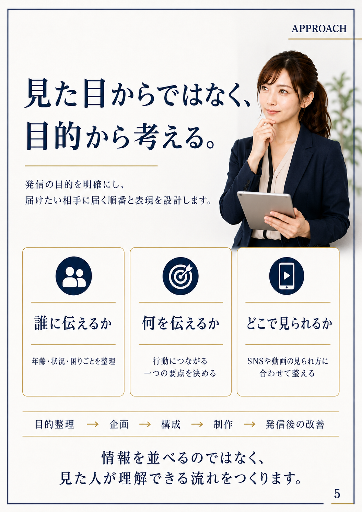
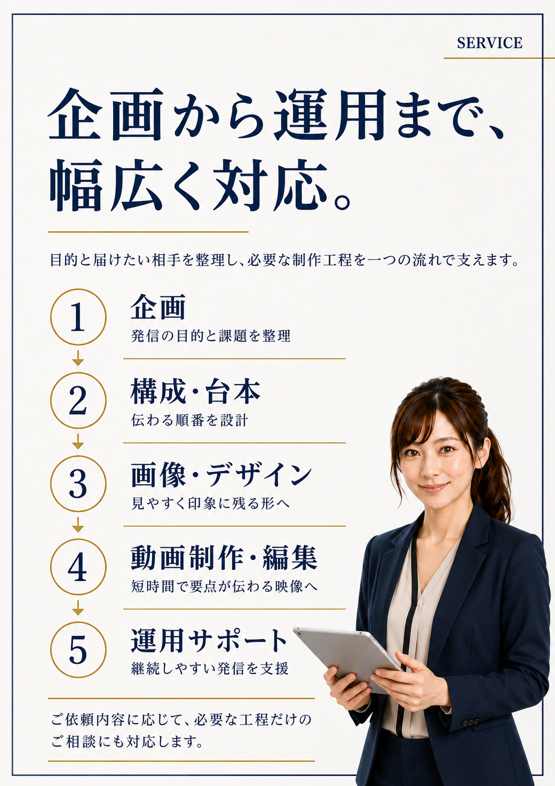
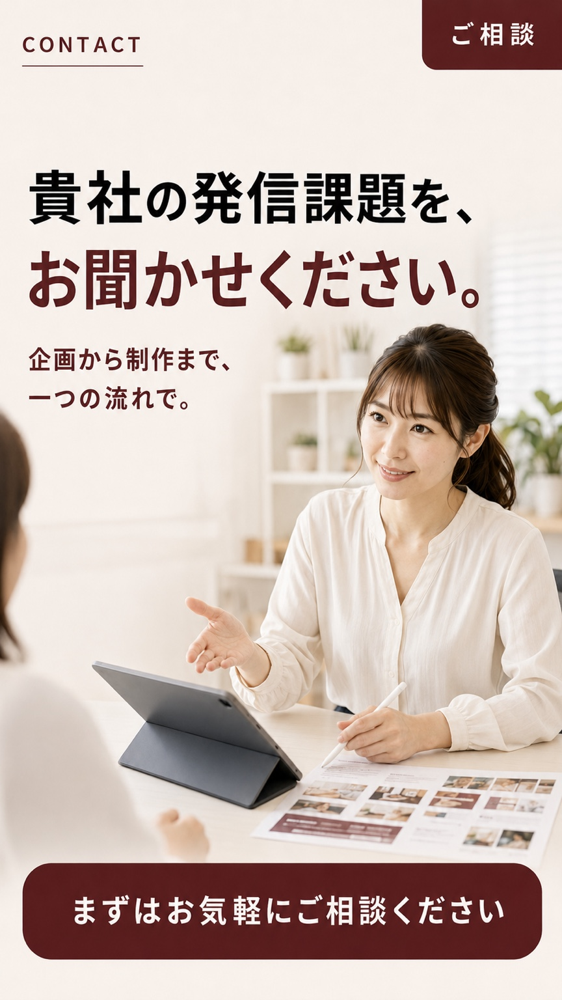
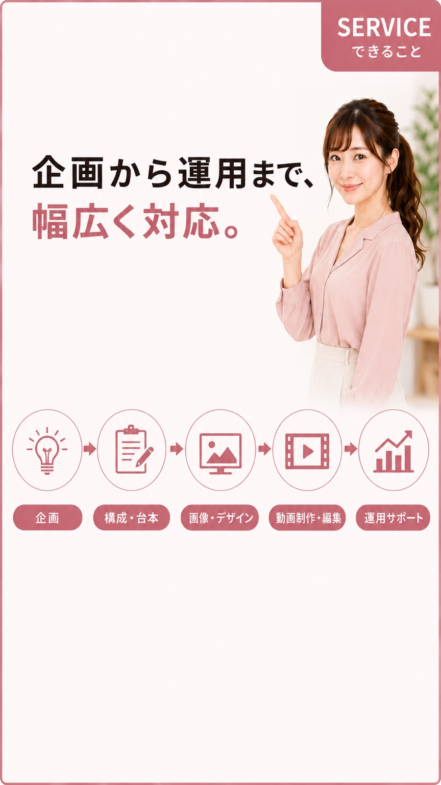
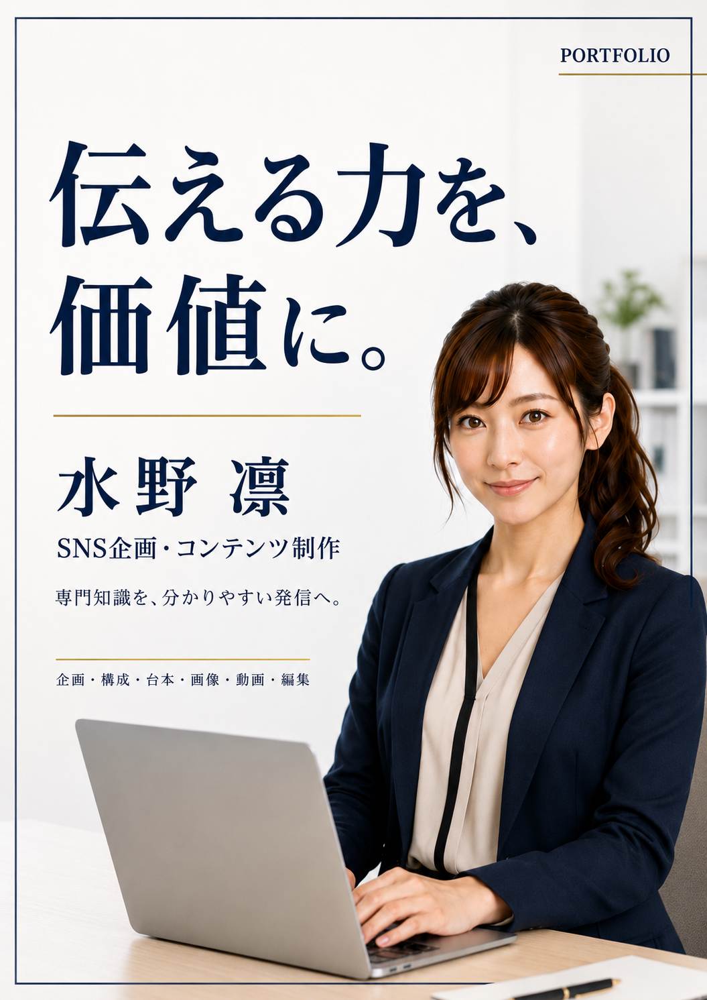
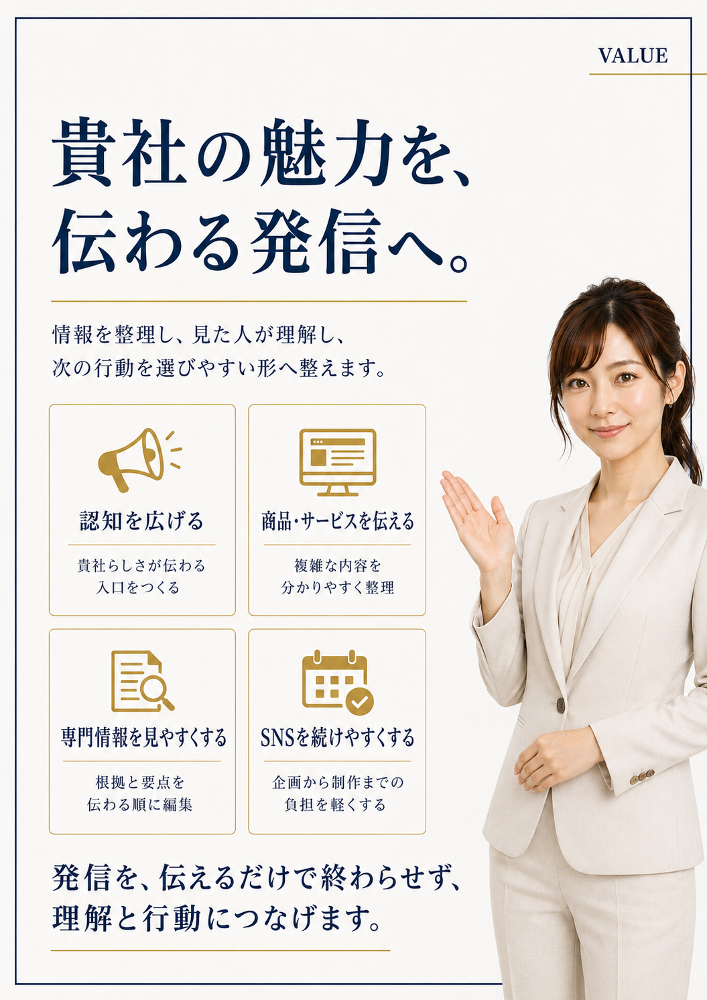
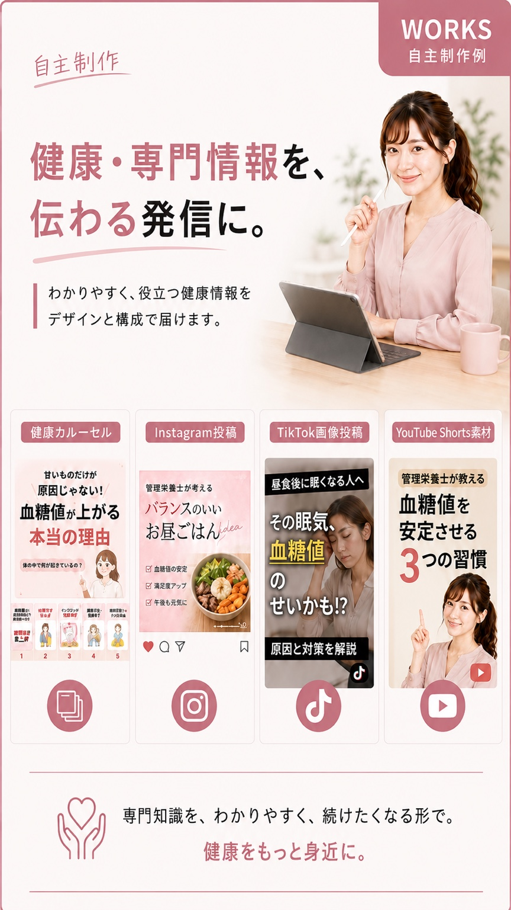
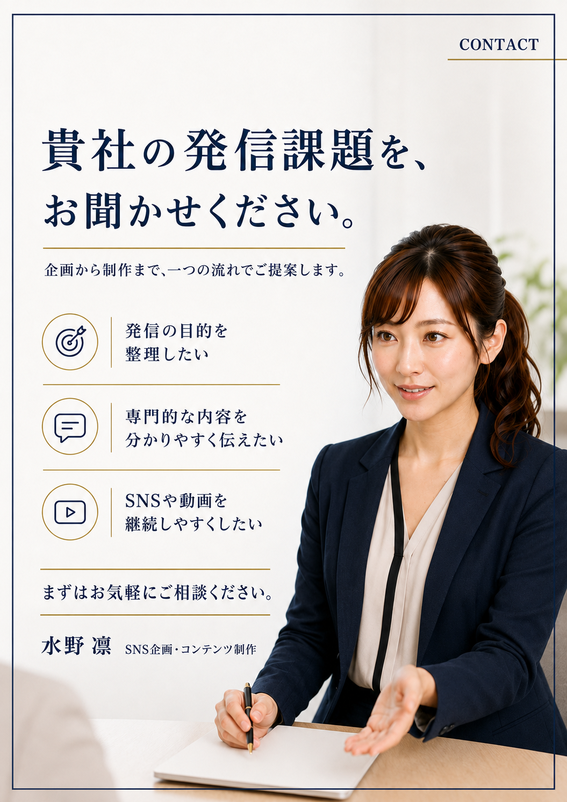

1
画像生成・画像制作
AI画像生成、広告画像、SNS画像、バナー、サムネイル、キャラクター制作。
誰に、何を、どこで伝えるかを整理し、企画から制作、発信後の分析・改善まで一つの流れで設計します。

単発の制作から、企画・投稿・運用・分析まで、必要な範囲に合わせて対応します。
AI画像生成、広告画像、SNS画像、バナー、サムネイル、キャラクター制作。
切り抜き、背景透過、合成、レタッチ、文字入れ、サイズ調整、用途別再編集。
ショート動画、PR動画、字幕、テロップ、BGM、サムネイル、画像連結。
チラシ、ポスター、パンフレット、営業資料、スライド、説明資料。
投稿制作、投稿管理、運用、インサイト分析、改善提案まで一連で支援。
目的とターゲットを整理し、伝わる順番と行動導線を設計します。

病院や企業での勤務経験を活かし、制作技術だけでなく、報告・連絡・相談と仕事の進めやすさも大切にします。

画像、動画、SNSコンテンツ、営業資料など、伝える目的に合わせて制作します。





病院勤務や飲料メーカー勤務で培った経験を活かし、専門的な内容や企業の魅力を、分かりやすい画像、動画、印刷物へ変換します。
画像生成・加工、動画編集、チラシ制作、SNS投稿・運用・分析まで、目的に合わせて一つの流れで対応します。
